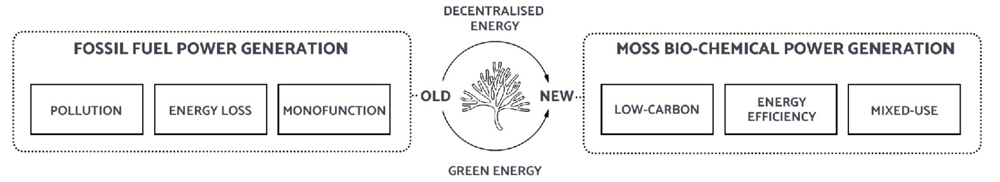
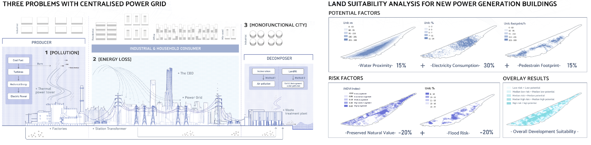
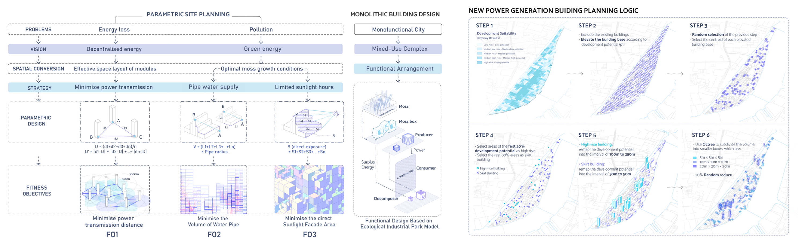
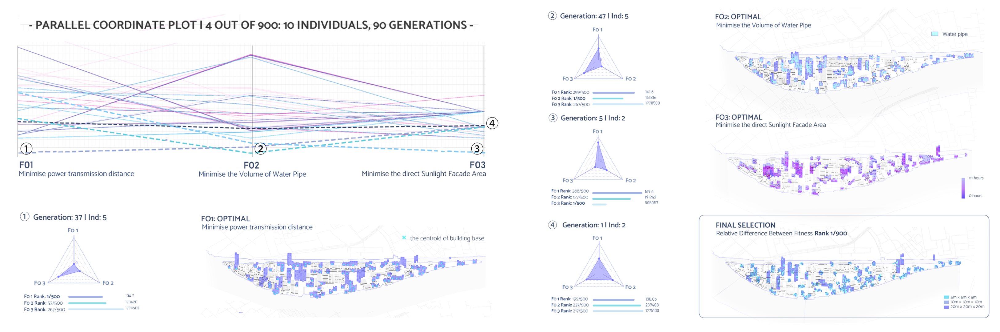

CITY MOSS | BIOPHILIC URBANISM

Fuxing lsland has been built upon a power system centered around Yangpu Power Plant. Growing electricity demand led to excessive local coal burning, generated huge pollution, and forced residents and urban services to move. ln response to these issues,we used biochemical energy as a fuel and parametric design as a tool to construct a decentralized power generation model and transform Fuxing lsland into a green and mixed-use industrial park.

Shanghai's Fuxing Island grapples with surging electricity consumption, prompting the coal-fired Yangpu Power Plant to bolster its power generation capacity, leading to a surge in pollutant emissions. In the realm of coal-based power generation, non-renewable energy sources and unrecyclable waste streams serve as primary energy inputs. Consequently, not only power plants, as producers, but also industrial and household consumers contribute to pollution emissions when utilizing electricity. Industrial decomposers, often referring to waste treatment plants employing landfill and incineration methods, further emit pollutants during the decomposition of mineral and organic materials. Moreover, the implementation of centralized power grids and thermal power towers gives rise to energy transmission losses and fosters uniform urban landscapes marked by the segregation of residential and industrial zones. These developments engender ecological and social complexities on Shanghai's Fuxing Island.

To assess the suitability and intensity of new power generation buildings, we considered three potential factors and two risk factors. Water proximity, electricity consumption, and pedestrian footprint were identified as indicators of locations favorable for power generation devices. Conversely, preserved natural value, represented by the NDVI index, and flood risks were deemed deterrents for new electricity facilities. By overlaying these layers with positive or negative weights, we generated an overall development suitability map where the relative values of spatial units were represented through building height. This approach allows for a comprehensive evaluation of potential sites for power generation infrastructure, considering both favorable and discouraging factors. By integrating these factors, informed decisions can be made in urban energy planning, striking a balance between development needs and environmental preservation.

Our research has uncovered the potential of moss boxes as decentralized batteries for generating electricity to meet household and industrial needs. These innovative boxes are designed to cultivate moss, featuring large holes that provide shade from direct sunlight. The interlocking bricks enable easy electrical connections, eliminating the need for cement and allowing seamless integration of modules into a single circuit.
The clay components of the moss boxes are predominantly unglazed, facilitating water absorption and maintaining a humid environment. Moss is planted in a soil mixture consisting of hydrogel and carbon fibers. The unique power-generating capability of the system lies in the symbiotic relationship between moss and bacteria. During photosynthesis, moss produces organic molecules that are released into the soil through its roots. The bacteria break down these molecules, generating various by-products, including free electrons that can be harnessed for electricity.
To determine the most suitable moss species for Fuxing Island, we conducted an in-depth study of Shanghai's climatic conditions, focusing on sunlight duration, temperature, and precipitation. Based on our analysis, Campylopus Introflexus emerged as the ideal moss species for cultivation. Additionally, we assessed the power capacity of moss boxes, referencing portable appliance consumption. A 1 m² moss wall can generate 35 Ford electricity, while a 60 m² moss wall has the capacity to fully charge a scooter, power seven laptops, fifteen mobile phones, and thirty LED bulbs simultaneously.
To optimize moss power generation, it is crucial to create an environment conducive to moss growth. This includes providing a semi-shady or lightly scattered light environment, as complete shade is not ideal for moss development. Moreover, maintaining sufficient water supply and ensuring an air humidity level of no less than 80% are vital for the thriving of moss. By embracing moss boxes as decentralized batteries, we have the potential to harness renewable energy in a sustainable and efficient manner, reducing our dependence on traditional power sources and fostering a greener future.

To optimize energy transmission and maximize moss growth, careful control of building distances is necessary to minimize energy loss during transmission. Additionally, ensuring stable water supplies and the availability of scattered sunlight are crucial factors for maximizing moss growth potential. With these considerations in mind, we have established three fitness objectives for our design:
In line with our ecological industry model, the monolithic building design incorporates modular moss boxes as electricity infrastructure, enabling the recycling of waste as surplus energy and new materials. These functional arrangements aim to transform the monofunctional island into a dynamic mixed-use industrial complex, effectively breaking down the segregation between commercial, residential, and industrial land uses.
To implement these concepts, we polygonized the site into 50x50 grids, excluding existing buildings. The building base was elevated to a height corresponding to the overlay results of development suitability. The first 20% of areas with high development potential were designated as high-rise buildings, ranging in height from 100m to 250m. The remaining 80% of areas were allocated as skirt buildings, ranging from 30m to 50m in height. Using Octree subdivision, we further divided the volume into smaller boxes with dimensions of 5m x 5m x 5m, 10m x 10m x 10m, and 20m x 20m x 20m.

Wallacei, an evolutionary multi-objective optimization engine, empowers users to conduct detailed evolutionary simulations within Grasshopper. It provides a comprehensive suite of analytical tools and selection methods to enhance users' understanding of their evolutionary runs and facilitate informed decision-making throughout the simulation process. With Wallacei, users can efficiently configure the design problem, analyze simulation results, and identify the desired solution(s) for the final output.
In this phase, we employed Wallacei to parametrize the site planning process, setting three optimization objectives. Through phenotype generation, we simulated 900 individuals across 90 generations. Our selection criterion focused on minimizing relative differences among the three fitness objectives, aiming to strike a balance between optimal conditions. Wallacei proves invaluable in driving effective decision-making by leveraging evolutionary simulations and enabling users to achieve desired outcomes in their design endeavors.


In the final stage of the building generation process, we implemented moss boxes of varying sizes onto the building facades. By adjusting the area of the building facades available for mounting moss boxes, each module can contribute a specific power generation capacity. We designed the facades according to the industrial ecology model, ensuring that the power output of each module meets the respective functional requirements. The following list illustrates the power generation capacities per 100m² for different functions within our ecological industrial park:
Within our ecological industrial park, the moss electricity headquarters acts as a primary producer, providing supplementary power to other producers. Cellulose and hydrogel manufacturers supply the necessary materials for moss box production and maintenance throughout the entire industrial park. Consumers also form a circular system, with large-scale research agents, medium-scale financial and trade agents, and small-scale co-working offices providing employment opportunities for residents, students, researchers, office workers, and tourists. Various retail units offer life facilities, contributing to the vibrancy of the industrial park. The public spaces primarily serve as a waterfront promenade, generating funds for the park's development as a supportive measure for real estate projects. The social interactions within these spaces facilitate the dissemination of knowledge among developers and maintainers of the moss ecosystem, indirectly driving the prosperity of the industrial park. These functional elements are locally clustered in a random manner and globally dispersed, creating density and diversity of use within the limited space, all supported by decentralized power generation modules.

In 2022, Fuxing Island relied heavily on the Yangpu Power Plant for its energy needs, but the conventional centralized energy generation and transmission methods proved unsustainable for the environment and urban functionality. Our proposal envisions Fuxing Island as a pioneering ecological industrial park by 2050, where moss serves as a material for power generation and plant ecology acts as a catalyst for diverse development, effectively addressing the energy challenges. Looking ahead to 2080, as power consumption continues to rise, we propose the introduction of the moss power generation model to the surrounding communities and public spaces, presenting an inspiring and ambitious vision towards achieving a zero-carbon city.